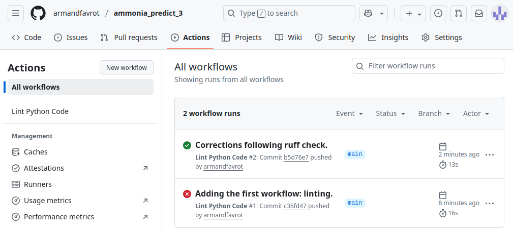
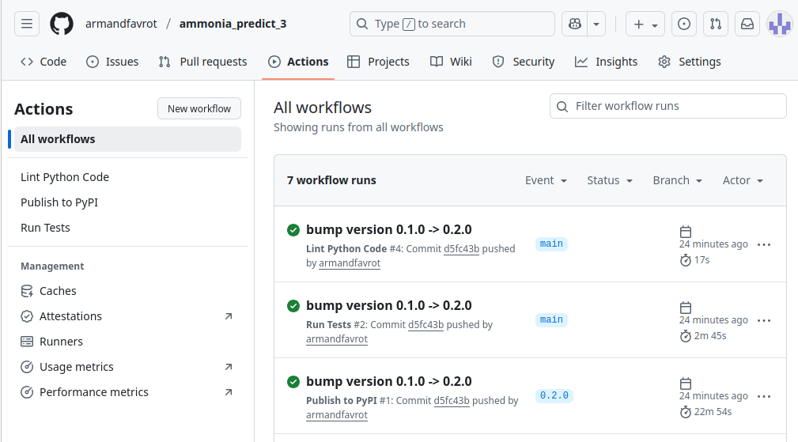
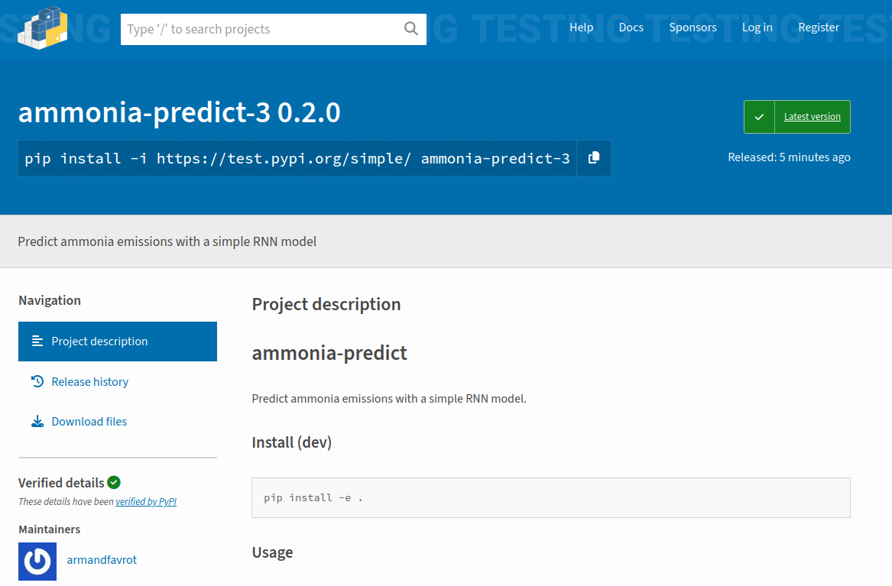

The goal of this workshop is to learn how to build a Python package. It is divided into three parts. In the first part, we create a toy package and install it locally. In the second part, we publish this package on TestPyPI (which allows us to verify that the package is correct before publishing it on PyPI, Python’s equivalent of CRAN for R). In the third part, we integrate CI/CD (continuous integration / continuous deployment) via GitHub to ensure package maintenance and automatic deployment to PyPI when releasing a new version. The associated code is available here: https://github.com/armandfavrot/ammonia_predict_3.
The resources we used come mainly from Real Python (very pedagogical):
A short note from RealPython about the Python packaging ecosystem, often criticized by R coders who are too proud of their CRAN:
“Over the last decade, many initiatives have improved the packaging landscape, bringing it from the Wild West and into a fairly modern and capable system. This is mainly done through Python Enhancement Proposals (PEPs) that are reviewed and implemented by the Python Packaging Authority (PyPA) working group.”
This highlights the fact that there are rules. For example, PEP 508 describes how dependencies should be specified.
Creating a toy package
We start by creating a virtual environment in which the package will be developed. Next, we create the package itself, including the source code and the standard supporting files. Then we install it locally, and finally we run the tests.
Creating a virtual environment
The first step is to create a virtual environment where the package will be developed. We used pyenv virtualenv to create the environment. Unlike venv, which only manages package versions, pyenv virtualenv also allows you to manage the Python version. For more information on environments, see this tutorial: Python Virtual Environments: A Primer.
The package was developed with python 3.12.3, torch 2.5.0, and pandas 2.2.3.
Install Python 3.12.3 with:
pyenv install 3.12.3
Create a virtual environment with:
pyenv virtualenv 3.12.3 ammonia_predict_3
Where ‘ammonia_predict_3’ is the name of the environment.
Create a directory where the package will be developed, move inside it, and activate the environment.
mmip: mkdir ammonia_predict_3mmip: cd ammonia_predict_3/ammonia_predict_3: pyenv local ammonia_predict_3(ammonia_predict_3)ammonia_predict_3:
Install the packages:
pip install torch==2.5.0pip install pandas==2.2.3
Check the versions:
(ammonia_predict_3)ammonia_predict_3: python --versionPython 3.12.3(ammonia_predict_3)ammonia_predict_3: pip list |egrep'torch|pandas'pandas 2.2.3torch 2.5.0
Package creation
The second step is to create the package. But first, what is a package in Python? Since we couldn’t find an official definition, we propose to see a package as a collection of modules, each of which is a file containing function definitions, classes, variables, and executable statements. Modules allow for modular programming, which “refers to the process of breaking a large, unwieldy programming task into separate, smaller, more manageable subtasks or modules” (Real Python). In other words, a package is essentially a collection of code divided into multiple files through a well-organized directory structure, which makes its use and maintenance easier.
The toy package we created predicts the dynamics of ammonia emissions under environmental conditions using a recurrent neural network.
pyproject.toml: a configuration file that tells Python tools how to build, install, and manage your package. This file typically contains three sections: [build-system], [project], and [tool].
[build-system] tells Python which tool should be used to build the package (e.g., setuptools, poetry, …).
[project] is used to specify the project’s basic metadata, such as dependencies, author information, etc.
[tool] is used to configure the tools used in the project, such as setuptools, pytest, ruff, and so on.
For more information on how to write this file, check the documentation. Configuration of the setuptools tool is explained here.
pyproject.toml
[build-system]requires = ["setuptools>=61"]build-backend ="setuptools.build_meta"[project]name ="ammonia-predict-3"version ="0.1.0"description ="Predict ammonia emissions with a simple RNN model"readme ="README.md"requires-python =">=3.12.3"authors = [ { name ="Armand Favrot", email ="armand.favrot@inrae.fr" }]classifiers = ["License :: OSI Approved :: MIT License","Development Status :: 3 - Alpha","Programming Language :: Python",]dependencies = ["pandas>=2.2.3","torch>=2.5.0"][tool.setuptools]package-dir= { ""="src" }include-package-data = true[tool.setuptools.packages.find]where = ["src"][tool.setuptools.package-data]ammonia_predict_3 = ["data/*.pth"][project.optional-dependencies]build = ["build", "twine"]dev = ["pytest"]
README.md: documentation for the package.
README.md
# ammonia-predictPredict ammonia emissions with a simple RNN model.## Install (dev)pip install -e .## UsageYou can use the package in Python as follows:import pandas as pdfrom ammonia_predict_3 import predictdf = pd.DataFrame({"pmid": [1, 1],"ct": [2, 4],"dt": [2, 2],"air_temp": [12, 15],"wind_2m": [3, 3],"rain_rate": [0, 0],"tan_app": [36.7, 36.7],"app_rate": [10, 10],"man_dm": [0.1, 0.1],"man_ph": [7, 7],"t_incorp": [0, 0],"app_mthd": [1, 1],"incorp": [0, 0],"man_source": [1, 1],})pred = predict(df)print(pred[["prediction_delta_ecum", "prediction_ecum"]])## Notes- The trained weights are included in the package under `ammonia_predict/data/final_model.pth`.- The package requires **Python ≥3.9**, **PyTorch**, and**pandas**.
__init__.py: a script that is executed when the package or one of its modules is imported. It is used, among other things, to control what the package exposes (for example, whether specific functions can be imported directly). More information on this file can be found here.
init.py
from .api import predict__all__= ["predict"]from importlib.metadata import version__version__ = version("ammonia-predict-3")
The other files are the package’s source code. api.py contains the function available to the package user, model_def.py defines the model class, and utils.py contains helper functions. final_model.pth is a data file that stores the model parameters.
To check the installation, go into another directory, activate the environment where the package was installed, start Python, import the package, and run the example provided in the README.md file.
(ammonia_predict_3)mmip: pythonPython 3.12.3 (main, Sep 1 2025, 16:05:27)[GCC 13.3.0] on linuxType"help", "copyright", "credits" or "license" for more information.>>> from ammonia_predict_3 import predict>>> import pandas as pd>>>>>> df = pd.DataFrame({..."pmid": [1, 1],..."ct": [2, 4],..."dt": [2, 2],..."air_temp": [12, 15],..."wind_2m": [3, 3],..."rain_rate": [0, 0],..."tan_app": [36.7, 36.7],..."app_rate": [10, 10],..."man_dm": [0.1, 0.1],..."man_ph": [7, 7],..."t_incorp": [0, 0],..."app_mthd": [1, 1],..."incorp": [0, 0],..."man_source": [1, 1],... })>>>>>> pred = predict(df)>>> print(pred[["prediction_delta_ecum", "prediction_ecum"]])prediction_delta_ecum prediction_ecum0 7.981954 7.9819541 4.829587 12.811542>>>
Development mode installation
Installing in development mode means that modifications to the source code are taken into account immediately, without needing to reinstall the package each time you make changes. It can be done with:
PyPI (The Python Package Index) is a repository of software for the Python programming language — the equivalent of CRAN for R.
TestPyPI is a separate instance of the Python Package Index that allows you to try out distribution tools and processes without affecting the real index.
To deploy to TestPyPI, you first need to create an account.
Next, you’ll need two packages: Build and Twine. Build is used to create an archive of the package, and Twine is used to upload the archives to TestPyPI.
Install both tools:
(ammonia_predict_3)pip install build twine
Build the archives:
(ammonia_predict_3)python-m build
The archives created by Build are placed in a folder called dist:
(ammonia_predict_3)ammonia_predict_3: tree distdist├── ammonia_predict_3-0.1.0-py3-none-any.whl└── ammonia_predict_3-0.1.0.tar.gz
CI/CD stands for Continuous Integration / Continuous Deployment. Continuous integration helps keep software functional in an ever-changing environment, while continuous deployment ensures it is automatically made available on platforms such as PyPI or CRAN whenever a new version is released. The key idea is: automation of tests.
In this section, we will use GitHub workflows, a tool that automates actions when working with GitHub. We will use GitHub workflows to automate linting (code formatting), testing, and deployment of a Python project. Workflows are defined in YAML files stored in the .github/workflows/ folder at the root of the project.
To do this, we first need to initialize git in our project, create a new repository on GitHub, and connect it to the local project.
With git, we only want to track the source code, so we create a .gitignore file that excludes the build/, dist/, __pycache__, and *.egg-info folders.
This action will be triggered on GitHub when pushing, making a pull request, or manually using a button in github (workflow_dispatch).
Actions are visible in the Actions tab of the GitHub repository:

At this stage, excluding the “parasitic” files and folders created during local installation and usage of the package (such as __pycache__, *.egg-info, …), the project tree looks like this:
We specified in the .toml file that the package works with python>=3.12, pandas>=2.2.3, and torch>=2.5.0.
However, we had not actually verified that it truly works.
Testing all possible combinations would be too costly.
Instead, we adopt a min-max strategy: for each Python version, we run pytest with (i) the minimal versions of pandas and torch, and (ii) the latest available versions. [Refs?]
In order to automate deployment to PyPI when we change our package version, we need to add our token as a secret in the GitHub repository. To do that, follow these instructions: Using secrets in GitHub Actions
Note: the secret is the token itself, which starts with pypi- (e.g., pypi-AgENdG...).
We then add the following file in .github/workflows:
Remark:PYPI_API_TOKEN is the name we gave to the token secret in GitHub.
A useful tool for handling versioning is bumpver. It automates updating versions in all files where the version appears, and we will use it to automatically commit and tag new versions.
(ammonia_predict_3)ammonia_predict_3: bumpver update --minorINFO- fetching tags from remote (to turn off use: -n / --no-fetch)INFO- Old Version: 0.1.0INFO- New Version: 0.2.0INFO- git commit --message'bump version 0.1.0 -> 0.2.0'INFO- git tag --annotate 0.2.0 --message'0.2.0'INFO- git push origin --follow-tags 0.2.0 HEAD
We can check on GitHub that the actions triggered by the push and the tag run successfully:

And that the package has been updated on TestPyPI:

Remark: with push = true in the [tool.bumpver] section of pyproject.toml, the deployment workflow is triggered at the same time as the other workflows (in particular, testing). However, we want the tests to pass before publishing to TestPyPI. Therefore, we set push = false, and manually perform the push and tag steps.
bumpver update --majorgit push[waiting for lint and test workflows to be completed]git push --tags